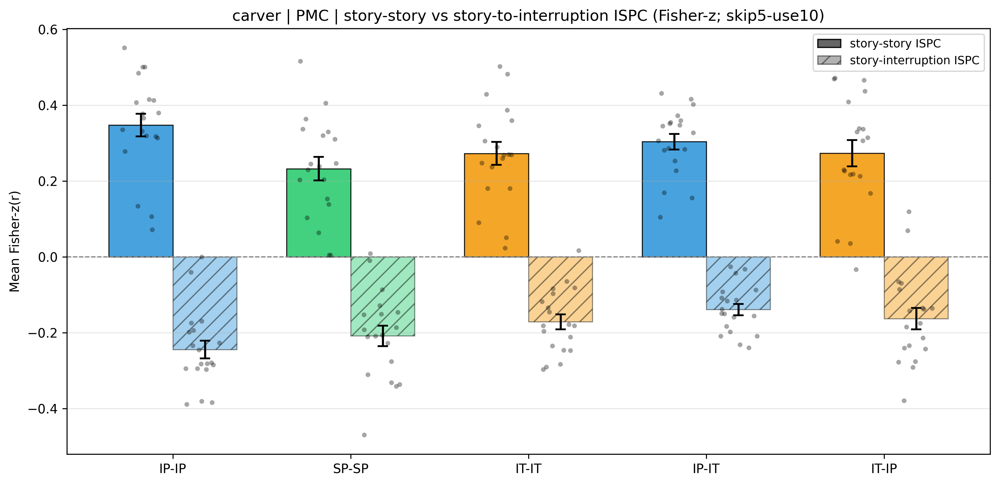
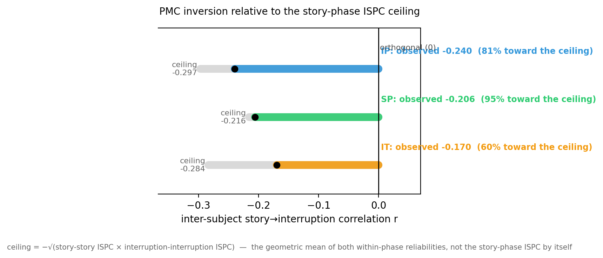

Posterior medial cortex (PMC); inter-subject pattern correlation (ISPC); main narrative; PMC voxels from the project's anatomical PMC mask, per-voxel timecourses z-scored across the entire run. Generated 2026-08-31 04:14.
Result 3.1 shows that the PMC multivoxel pattern during interruption is inverted relative to the preceding story: the story-to-interruption ISPC is reliably negative. This section asks how far that inversion goes. We report two complementary views. First, the story-to-interruption ISPC is placed next to the story-story ISPC — the stimulus-driven reliability of the story pattern across participants — so the inversion can be read on the same scale as the reliability that bounds it. Second, the inversion is compared with the cross-phase reliability ceiling, the strongest anti-correlation two participants' patterns could show given how reliably each phase is measured; correcting for that ceiling gives a disattenuated, noise-free estimate of how completely the underlying pattern inverts.
For every interruption epoch we built two 10-TR template patterns in PMC: a story window (the ten TRs ending one TR before onset) and an interruption window (the ten TRs beginning five TRs after onset; the first five post-onset TRs were discarded to avoid hemodynamic carry-over from the preceding story segment). ISPC at each epoch is a single Pearson correlation between one participant's window template and the across-participant average of the comparison group's window template at the matched epoch. The story-story family uses the story window on both sides (the stimulus-driven reliability of the story pattern); the story-interruption family uses the participant's story window and the comparison group's interruption window (the inversion). Both were evaluated under five inter-subject schemes: three within-condition (intact-pause, IP-IP; scrambled-pause, SP-SP; intact-theory-of-mind, IT-IT) and two across-condition (IP-IT and IT-IP). All averaging is in Fisher-z space; the group ISPC is the Fisher-z group mean θ̂z, its uncertainty the standard error across participants and the 95% confidence interval θ̂z ± 1.96 SE, and the reported test a one-sided sign-flip permutation test on delete-one-subject jackknife pseudo-values (story-story expected > 0; story-interruption expected < 0).
| Family | Cond | n | ISPC mean (r) | ISPC mean (Fisher-z, θ̂z) | SE | 95% CI | p (sign-flip) |
|---|---|---|---|---|---|---|---|
| story-story | IP-IP | 19 | 0.2992 | 0.3473 | 0.0301 | [0.2883, 0.4063] | 1.00e-04 |
| story-story | SP-SP | 19 | 0.2098 | 0.2324 | 0.0310 | [0.1716, 0.2931] | 1.00e-04 |
| story-story | IT-IT | 19 | 0.2373 | 0.2724 | 0.0302 | [0.2132, 0.3316] | 1.00e-04 |
| story-story | IP-IT | 19 | 0.2674 | 0.3037 | 0.0206 | [0.2634, 0.3440] | 1.00e-04 |
| story-story | IT-IP | 19 | 0.2359 | 0.2732 | 0.0344 | [0.2059, 0.3405] | 1.00e-04 |
| story-interruption | IP-IP | 19 | -0.2209 | -0.2449 | 0.0235 | [-0.2910, -0.1988] | 1.00e-04 |
| story-interruption | SP-SP | 19 | -0.1894 | -0.2087 | 0.0271 | [-0.2619, -0.1556] | 1.00e-04 |
| story-interruption | IT-IT | 19 | -0.1552 | -0.1714 | 0.0198 | [-0.2101, -0.1327] | 2.00e-04 |
| story-interruption | IP-IT | 19 | -0.1249 | -0.1392 | 0.0148 | [-0.1682, -0.1101] | 1.00e-04 |
| story-interruption | IT-IP | 19 | -0.1459 | -0.1631 | 0.0281 | [-0.2182, -0.1081] | 2.00e-04 |
The negative story-interruption ISPC is smaller than, but on the same scale as, the positive story-story ISPC in every scheme — the interruption pattern is a substantial, reliable inversion of the story pattern, not a faint residue.

Stimulus: the main narrative, PMC; n = 19 per scheme. Solid = story-story (stimulus-driven reliability), hatched = story-interruption (inversion). Bars: θ̂z (Fisher-z group mean). Whiskers: ±SE across participants. Dots: subject-mean Fisher-z values. Solid = story-story; hatched = story-interruption.
A raw inter-subject correlation understates how completely two patterns invert, because each phase is measured with noise. The most negative the story-to-interruption inter-subject correlation could be is set by the two within-phase reliabilities: the reliability ceiling is −√(rstory-story × rint-int), the negative geometric mean of the story-phase and interruption-phase ISPC. A complete underlying flip would reach that ceiling; a pure orthogonalization would sit at zero. Dividing the observed story-interruption correlation by √(rstory-story × rint-int) removes the measurement attenuation and yields a disattenuated correlation ρtrue between the underlying story and interruption patterns — the "true" extent of the inversion (with a delete-one-participant jackknife 95% confidence interval). Here rint-int is the interruption-phase ISPC computed with the same windows and the same inter-subject scheme as the story-phase ISPC, so the ceiling combines both within-phase reliabilities rather than the story-phase reliability alone.
| Condition | rstory-story | rint-int | rstory-int | reliability ceiling | % toward ceiling | disattenuated r (ρtrue, 95% CI) | pattern angle (arccos ρtrue) |
|---|---|---|---|---|---|---|---|
| IP (intact-pause) | 0.334 | 0.264 | -0.240 | -0.297 | 81% | -0.809 [-0.942, -0.692] | 144.0° |
| SP (scrambled-pause) | 0.228 | 0.204 | -0.206 | -0.216 | 95% | -0.953 [-1.000, -0.792]† | 162.4° |
| IT (intact-theory-of-mind) | 0.266 | 0.302 | -0.170 | -0.284 | 60% | -0.599 [-0.698, -0.462] | 126.8° |
† confidence interval truncated at the −1 boundary (a correlation cannot exceed magnitude 1).

The observed inversion reaches a large fraction of the cross-phase ceiling in every condition, and the disattenuated ρtrue is reliably negative, so the interruption pattern is a near-complete reflection of the story pattern rather than an orthogonalization of it.